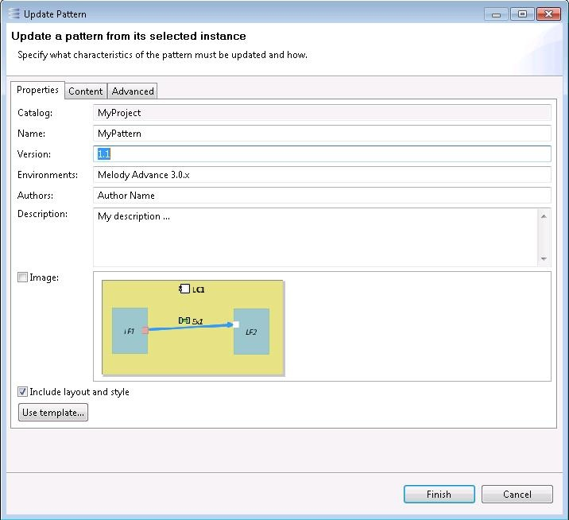
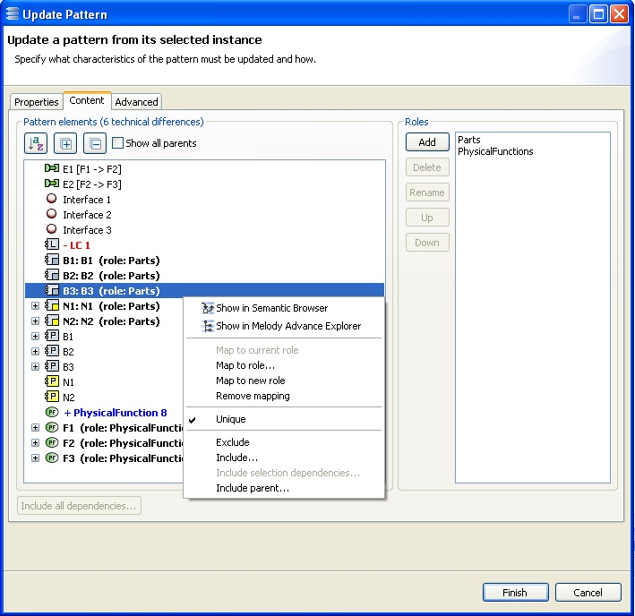

The update pattern button
The “Update pattern” button performs the opposite operation to the one above: the pattern is synchronized with the instance. In addition, all the other properties of the pattern can be modified. This is done via the Pattern Update wizard that pops up when the button is being clicked.
The first tab of the wizard allows the user to edit the name and metadata of the pattern. The version number is automatically incremented if possible.

By default, the image is not updated. Click the “Image” checkbox to substitute the original image with that of the current instance. Be careful that the new image is built solely from the graphical elements which are currently selected in the diagram.
The “Include layout and style” checkbox allows replacing the original layout and style with that of the selected graphical elements. Warning: All graphical elements whose layout and style must be included in the pattern must be present in the current diagram.
If the “Finish” button is clicked immediately, only the pattern elements and the version number of the pattern are updated. This is usually sufficient for a simple usage of patterns in “addition” mode.
The second tab of the wizard is concerned with the pattern elements. It is similar to the second tab of the Pattern Creation wizard except that it shows the differences between the instance and the pattern.

- The elements which have been moved or modified (via their attributes or references) are represented in purple and prefixed with a “>” symbol.
- The elements which have been added are represented in blue and prefixed with a “+” symbol.
- The elements which have been removed are represented in red and prefixed with a “-“ symbol.
The elements which are added or modified can be used like other pattern elements (mapped to a role, excluded from the scope, have their “Unique” property changed, etc.). If additional elements are included in the instance via the “Include…” menu item, they will appear as added elements. The same happens with elements added via the “Include dependencies…” button
(see section “Pattern Creation”).
The roles can be added, deleted, renamed, moved up and down the same way as in the pattern creation process.
Note that in multi-part instances
(see section “Pattern Creation”), a single pattern element may have several corresponding elements in the instance. The differences between the instance and the pattern thus depend on the “part” of the instance to consider. In that case, the “part” is determined by the element via which the Instance Management Panel was displayed, if it belongs to a specific part.
Warning: In multi-part instances, modifying the scope of the instance with the “Exclude” or “Include…” menu items results in unexpected differences being shown. The combination of scope modification and multi-part instances is not supported in this version of the tool.
The third tab of the wizard is concerned with the detailed specification of the roles; it is similar to the corresponding tab in the Pattern Creation wizard.